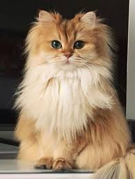

Volver a Inicio
Gato Persa
Origen
Hasta ahora se consideraba que el gato persa descendía de los gatos de pelo largo de Oriente. En el siglo XVII se introdujeron por primera vez los gatos de pelo largo en Europa. Estos procedían de la entonces existente Persia, actualmente Irán, y debieron ser la base de la cría de los gatos persas. Sin embargo, esta raza, tal y como la conocemos hoy en día, poco guarda en común con su origen. Esto no es de extrañar porque, según los últimos conocimientos científicos, los ascendientes de los gatos persas que nosotros conocemos provienen de Rusia. Un análisis genético del genoma de estos felinos refleja que esta raza desciende de los gatos domésticos rusos de pelo largo, y que no guarda parentesco con la línea asiática.
La denominación «persa» solo se estableció con la fundación de la primera asociación de criadores a principios del siglo XX. Hasta ese momento se empleaba principalmente el término «gato de Angora» para los gatos de pelo largo. Desde entonces el estándar de cría de los gatos persas ha cambiado en más de una ocasión. Con el paso del tiempo, se ha otorgado más importancia a una frente más redonda y a un cráneo con una forma más corta, mientras que el pelaje se ha vuelto cada vez más denso y con un manto inferior más abundante, lo que le ha conferido ese aspecto de peluche. Este hecho también ha supuesto una desventaja para la raza porque, al aumentar su popularidad, los persas se empezaron a criar en masa, sobre todo en EE. UU. donde se emparejaban sin considerar los perjuicios para su salud y, con ello, se consolidó un modelo de la raza cada vez más extremo. La nariz rebajada, los ojos llorosos y la tendencia a las inflamaciones en la nariz y en la garganta, así como los problemas para la asimilación de la comida y para respirar, les han conferido la fama de «raza torturada».
Aspecto
El gato persa destaca por su pelaje largo y suave, con un manto inferior denso. Pero no todos los gatos de pelo largo son persas, de hecho estos gatos han de cumplir numerosos requisitos adicionales para satisfacer los estándares de la raza.
El aspecto de los gatos persas está definido por 3 asociaciones de criadores diferentes, que priorizan características distintas. Por regla general, un gato persa ha de tener un tamaño mediano a grande. Los machos pesan hasta 7 kg y las hembras, hasta 6 kg. El peso del cuerpo lo soportan unas patas cortas y robustas. Los mechones de pelo entre los dedos de las patitas redondas son una cualidad especialmente buscada.
Aparte del pelo largo, la cara de los gatos persas es típica de esta raza. La cabeza redonda y ancha presenta unas orejas redondas, idealmente con mechones de pelo, y una nariz muy corta. El puente de la nariz debe terminar entre los ojos, este famoso stop no debe estar situado por encima del párpado superior ni por debajo del párpado inferior. Esto confiere a los gatos persas una apariencia muy característica, aunque puede conllevar problemas de salud conocidos y ha originado una fuerte crítica por parte de los criadores de persas más extremistas, de los que hablaremos más adelante. Por ello, ciertos criadores prefieren el estándar de cría antiguo, con una nariz larga, pero que ya no coincide con el estándar actual.
El gato persa se puede encontrar prácticamente en todos los colores conocidos. Los unicolores pueden ser: negros, blancos, rojos, azules, chocolate, lila o crema. Los bicolores y los tricolores (caparazón de tortuga) se encuentran entre los favoritos, al igual que los gatos persas del exótico color smoke: una gran parte del pelaje de estos ejemplares es de color, mientras que las puntas son blancas plateadas. En caso de que solo presenten color en las puntas del pelo y la mayor parte de su pelaje sea de color gris plateado, estamos ante la variedad shaded.
Los gatos persas comparten el estándar de raza de los gatos exóticos de pelo corto y los colourpoint. Solo se diferencian en la longitud, la textura y el color del pelo. En 1933, una de las asociaciones europeas de gatos de raza reconoció a los exóticos de pelo corto. Su constitución física y carácter se corresponden con el de los gatos persas, pero poseen un pelaje corto como de peluche. Los colourpoint, también definidos como «himalayos», provienen del cruce entre gatos siameses y persas. Estos animales comprenden los estándares de la raza de los persas, aunque presentan la coloración point de los siameses. Cualquier color del pelaje puede aparecer como color point. Los más comunes son el negro y rojo, con sus diluciones azul y crema, y los colores chocolate y cinnamon, con sus diluciones lila y fawn.
Carácter
Los gatos persas son muy tranquilos e idóneos para tenerlos como el único animal en casa debido a que su necesidad de libertad está poco desarollada. A estos pequeños felinos les encantan los mimos y acurrucarse con sus dueños; son unos animales muy apegados.
No obstante, aunque los gatos persas son animales muy equilibrados, en el fondo todavía siguen siendo depredadores. Por eso, a los gatos tranquilos y con poco interés por los juegos se les debe brindar la oportunidad de descubrir, trepar y jugar. El interior de una casa debe estar adaptado a las necesidades de los gatos que viven en ella para poder mantenerlos mentalmente en forma y felices, aunque no realicen ejercicios acrobáticos propiamente dichos.
Cada casa debe contar con, al menos, un rascador porque, aunque los gatos no muestren mucho interés por las diversas opciones para trepar, rascar forma parte de su comportamiento natural. Los mininos deben rascar para liberarse de las capas de uña muertas. Además, estos marcan su territorio a través de señas de arañazos y difunden un «olor de bienestar» a través de las glándulas odoríferas de sus patitas, siendo este imperceptible para los humanos. Los gatos que no disponen de un rascador, un poste o una tabla para rascar, tarde o temprano acabarán haciendo uso de las esquinas de las habitaciones o de los muebles para desarrollar este instinto. Pero los rascadores no solo cubren la necesidad de rascar, sino también ofrecen opciones para trepar y una fantástica plataforma desde la que observar lo que ocurre alrededor. A los gatos les encanta contemplar el mundo desde las alturas, por lo que también puedes colocar una hamaca para la ventana o para el radiador.

